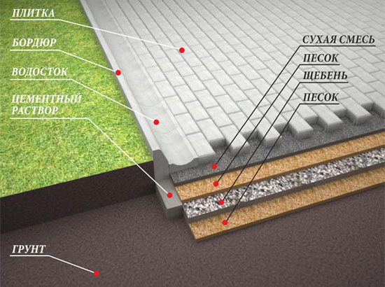

Мы работаем с жилым и коммерческим ландшафтом. Тротуарная плитка применяется для поверхности автомобильных дорог, парковки, мест для прогулок, тротуаров, внутренних двориков коттеджей. Это самый основной элемент в комплексном благоустройстве территорий. Кроме этого, "ПрофиСтрой" оказывает услуги по озеленению детских садов и школ в комплексе с укладкой плитки.
Преимущества тротуарной плитки
- Срок службы не меньше 20-ти лет.
- Индивидуальный дизайн-проект с большим разнообразием стилей.
- Способность приспасабливаться к разным природным условиям эксплуатации.
- В 3 раза устойчивей, чем бетонные и асвальтные поверхности.
Как мы работаем?
Немного о технологии укладки из уст наших специалистов. В последнее время очень много людей пытаются произвест укладку тротуарной плитки своими руками. Однако, это не такой уж и легкий процесс, как кажется на первый взгляд. Для этого процесса характерны сложные, нестандартные моменты и тяжелый физический труд. И именно из-за этого, мы рекомендуем обратиться к профессионалам по благоустройству участков, например, к нам :)
Вдаваться в подробности не будем, просто расскажем о самых основных правилах укладки тротуарной плитки.
Первый момент в работе - это подготовительный этап, здесь мы создаем план территории, наносим наши пожелания по размещения всех дорожек и площадок на план и уже далее по плану делаем разбивку на местности, учитывая все площади и уклоны.
Второй этап - это планировка участка, здесь мы делаем так называемое "корыто" под тротуарную плитку, опять же учитывая размеры и наши требования под мощение.
Третий этап - устройство несущих слоёв и их уплотнение, это наиболее важный момент при укладке тротуарной плитки. От него зависит как долго и как красиво пролежит ваш материал. Следующий этап, это установка тротуарного борта (или садового), он служит что бы плитка не расползалась по краям.